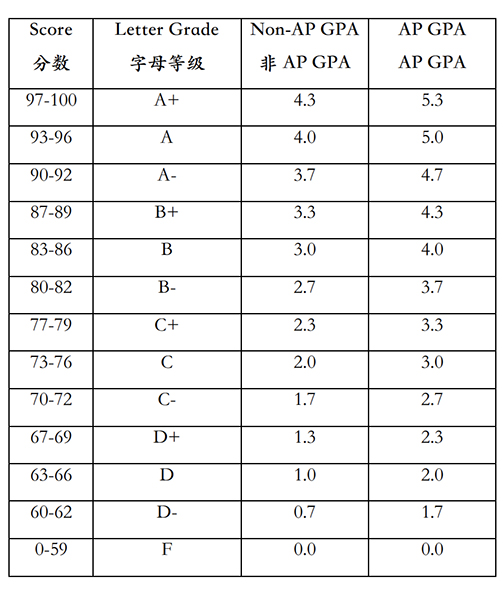

Paulsweb
清澜人的上网导航
Tsinglanian's Internet Navigator


GPA calculation
GPA Calculator
Grade Point Average (GPA) is based on credits and grade points as the unit of calculation to measure the quantity and quality of students' learning, and a certain number of credits and average grade points are used as the criteria for graduation and obtaining a degree. Tsinglan School adopts the internationally accepted GPA calculation method, that is, GPA = sum (course credits * grade points) / sum (course credits) = the sum of the product of the credits of each course / the sum of the credits of each course.
As announced in the "Family Handbook", the conversion relationship between GPA and other scoring standards is as follows. Among them, taking into account the difficulty of the course, students who elect and successfully complete the AP course will be weighted by GPA at the end of the school year.
for example:
In the ninth grade, the courses completed by Xiao Wang and the scores of each subject are:
- Chinese Culture and History I (1 credit, A)
- Algebra II (1 credit, B+)
- World History I (1 credit, B+)
- AP Physics 1 (1 credit, A-)
- English I (1 credit, A+)
Then the calculation method of Xiaowang's grade 9 GPA is: GPA = (4*1+3.3*1+3.3*1+4.7*1.5+4.3*1)/(1+1+1+1.5+1)=4.0
In the tenth grade, the courses completed by Xiao Wang and the scores of each subject are:
- Chinese Culture and History II (1 credit, A)
- AP Calculus AB (1 credit, B)
- World History II (1 credit, A-)
- AP Physics C (1 credit, B+)
- Spanish I (0.5 credits, A)
- English II (1 credit, A+)
Then the calculation method of Xiaowang's cumulative GPA in grade ten is:
GPA = (4*1+3.3*1+3.3*1+4.7*1.5+4.3*1+4*1+4*1.5+3.7*1+4.3*1.5+4*0.5+4.3*1)/( 1+1+1+1.5+1+1+1.5+1+1.5+0.5+1)=4.0
In high school, an AP course with 8 lessons per academic week in one academic year is equivalent to 1.5 credits, and an AP course with 6 lessons per academic week in an academic year and AP courses with less than 8 lessons per academic week are equivalent to 1 credit. A course with 4 lessons or less in a school week is equivalent to 0.5 credits. After completing all courses, students will officially earn credits at the end of the school year.
The GPA score of each semester is automatically generated by the school treasure. Teachers can check it on the school treasure website-the results list page, and parents can see it on Dingding.
The good news is that entering a higher school only cares about the cumulative GPA of the student during the four years of high school. The previous GPA is for reference only.

play game for humanities midterm exam
Crossword Puzzle Maker
Supported by
Powered by of 
Current Time